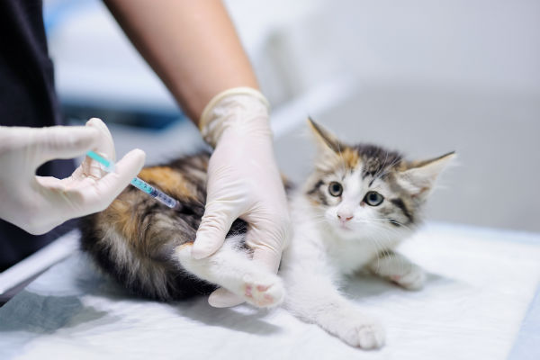

os gatos também devem tomar outras vacinas. O calendário de vacinação felino inicia aos 2 meses e deve conter um reforço aos 3 meses. A partir daí, o reforço é anual, para uma imunização eficaz.
Quais são as doenças que a vacinação pode proteger o seu gato?
V4 (Quádrupla):
– Panleucopenia: é uma virose comparada à Cinomose canina por provocar sintomas no trato digestivo, respiratório e no sistema nervoso central.
– Calicivirose (CVF): é uma virose que atinge diretamente o sistema respiratório de gatos, sendo altamente contagiosa através da secreção liberada por animais contaminados.